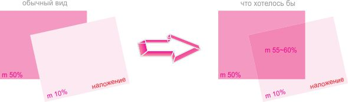

использование параметра overprint
Alex000r / 18.04.2011, 20:30/00:41
Форум:
Возьмем один из базовых цветов палитры CMYK - magenta. Если наложить на объект залитый цветом magenta плотностью 50% другой объект с цветом magenta плотностью 10% и включить overprint, то в итоге (на экране, на postscript) виден верхний объект с 10% плотностью цвета. А хотелось бы, чтобы плотности суммировались как-нибудь (например как в Illustrator`e режим наложения Multiply)
Есть такая "фишка" в Corel?

Хм. На рисунке нужный результат выглядит как простое применение прозрачности.
Чем она не в помощь? Боитесь за PS? Я обычно делаю PDF и потом в "дистиляторе" убиваю прозрачность.
А вообще я так понимаю что все же оверпринт 10% поверх 50% должен давать 60%... иначе где тут оверпринт?
Alex000r, есть режим наложения Multiply
Оверпринт - это наложение разных красок, а не суммирование. Если вы накладываете 10% маженты поверх 50%, то у вас будет 10% маженты. Но если положите те же 10% маженты поверх 50% циана, то будет 10 маженты и 50 циана.
спсасибо всем. нашел
Добавлено (19.04.2011, 13:03)
---------------------------------------------
GadGett можно более подробно, как вы в Distiller`е "убиваете" прозрачность. что это дает (экономит время или убирает непредсказуемость прозрачности)
Alex000r, Ой! простите меня пожалуйста!
Я имел в виду Flatten Transparency, но поискав действительно не нашел такого в Distiller (только в иллюстраторе).
Простите меня еще раз.
Признаваться в ошибках не приятно, но я ошибся. Лучше признаться в этом сразу чем выискивать в доступных из Distillerа PDF презетах какие-то настройки и говорить что их я и имел в виду. :)
P.S. А на счет того что это вообще дает - постараюсь найти те файлы с которыми я это делал, правда может и не смогу найти - было это достаточно давно, если что - напишу.